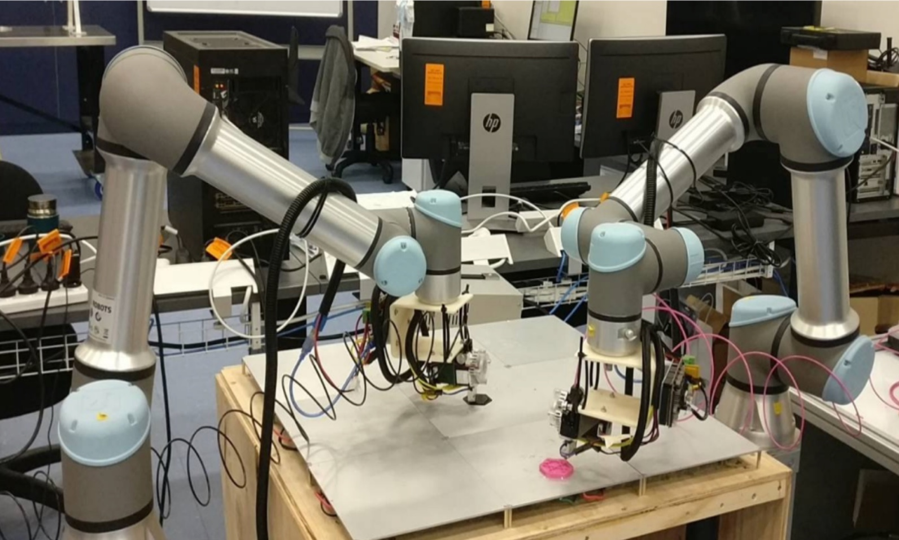
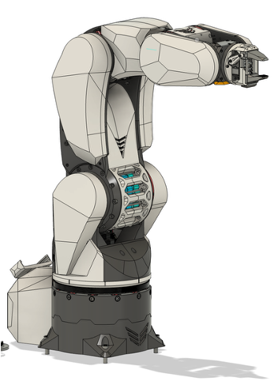
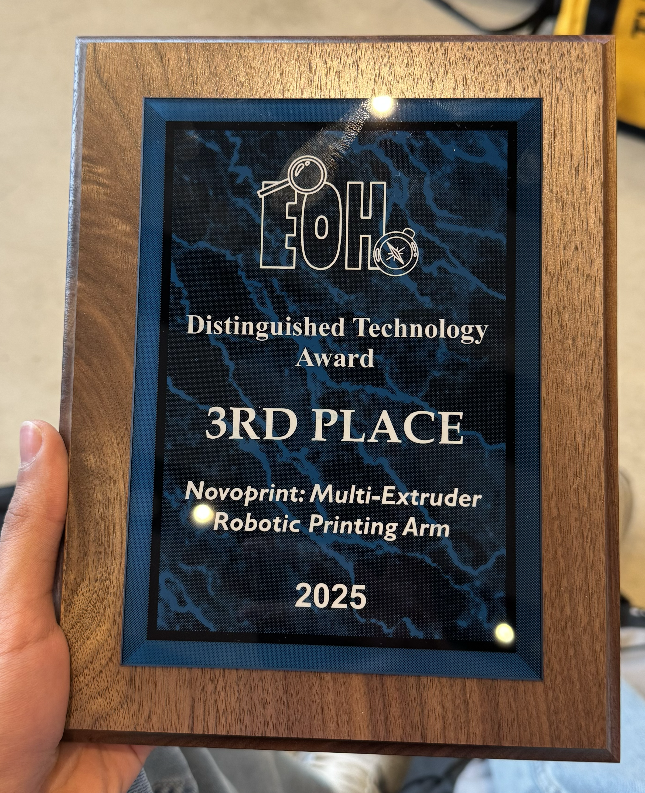

Overview
A 6-DOF Robotic Arm for Advanced 3D Printing Applications
The NovoPrint project, developed for the American Society of Mechanical Engineers (ASME) under Dr. Clemon's research group, is an advanced robotic system designed to redefine the possibilities of additive manufacturing. The primary goal was to build a fully functional 6-degree-of-freedom (6-DOF) robotic arm capable of performing complex 3D printing tasks. Unlike traditional gantry-based 3D printers, this arm offers greater flexibility, enabling printing on non-planar surfaces and creating more intricate geometries. This project showcases a deep integration of mechanical design, electronics, and software control.

Concept
Adapting Open-Source Innovation for a New Challenge
The concept was born from the challenge of pushing the boundaries of conventional 3D printing. We aimed to create a more versatile and adaptable manufacturing tool by leveraging the dexterity of a robotic arm. The project began by adapting a robust open-source design, which provided a solid foundation. Our team's core challenge was to enhance and tailor this design for the specific demands of additive manufacturing, focusing on precision, stability, and control.
By integrating a 3D printing extruder as the end-effector, the concept evolved into a multi-axis manufacturing platform. This approach opens up new possibilities for creating complex parts that would be impossible with traditional 3-axis printers, bridging the gap between robotics and fabrication.

Design Process
From Leadership to Implementation
The development of NovoPrint was a multidisciplinary effort that required strong leadership and technical expertise. As the project lead, my role involved directing the entire development cycle, from securing funding to final implementation. The process was hands-on, involving rapid prototyping and iterative design to overcome challenges.
Key milestones in the design process included:
- Directing and managing cross-functional teams across mechanical design, electrical engineering, and programming.
- Managing a rapid prototyping workflow, which involved 3D printing over 106 custom parts for the arm's structure and mechanisms.
- Integrating all mechanical and electrical components to create a cohesive, functional system.
- Implementing ROS (Robot Operating System) for high-level control, enabling precise and reliable positioning for 3D printing tasks.
- Developing a serial control interface for direct communication and command execution.

Specifications
Key Technical Features
- Degrees of Freedom: 6-DOF
- Control System: ROS (Robot Operating System)
- Application: Additive Manufacturing / 3D Printing
- Construction: Over 106 3D-printed components
- Key Skills: Robotics, Automation, Complex Assembly, Fabrication
- Interface: Serial Control Interface
Result
An Award-Winning Demonstration of Innovation
The NovoPrint project was a resounding success, culminating in a fully operational robotic arm that successfully demonstrated its 3D printing capabilities. The project served as a powerful showcase of skills in leadership, robotics, automation, and complex electromechanical assembly. The successful implementation of ROS for precise control highlighted the project's technical sophistication.
This achievement was recognized at the Engineering Open House (EOH), where the project was awarded the Distinguished Technology Award. NovoPrint not only met its initial goal but also stood out as an innovative application of robotics in modern manufacturing, demonstrating significant potential for future research and development in the field.
